Problem
Waking Up Is Hard
Most alarms don’t fail because we don’t care. They fail because nothing is built to make us follow through. Mornings are the first place intention meets reality, and the first thing we trade away when we’re already behind.
Mattress level haptics to get you out of bed, not another snooze you can tap away.
Design Engineer
Skye Gaertner (cofounder)
Maya Parthasarathy (cofounder & product designer)
Tongfei Zhu (design engineer)
Mavis Zhang (graphic designer)
Oct 2025 to Dec 2025
Figma
Cursor
Adobe Photoshop
Adobe After Effects
Problem
Most alarms don’t fail because we don’t care. They fail because nothing is built to make us follow through. Mornings are the first place intention meets reality, and the first thing we trade away when we’re already behind.
Ideation
We started from one question: How do we know someone is physically out of bed? Phones, wearables, and bedside gadgets kept failing the same way. If you can reach it half asleep, you’ll silence it.
Mattress level haptics give strong vibration without a noisy screen. We aimed for comfort, low friction, and durability, then locked the form factor to behavior you can’t cheat.
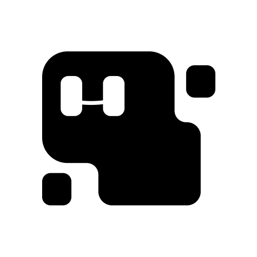
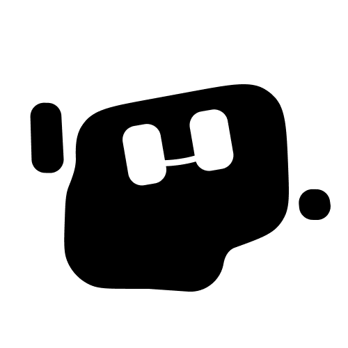
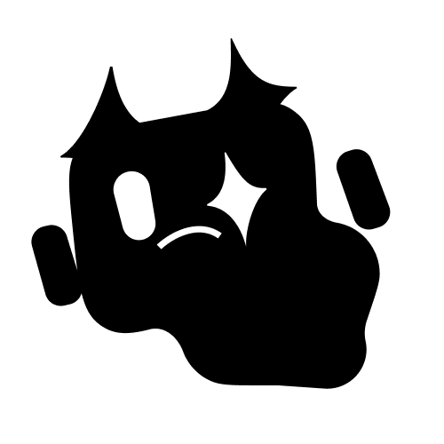
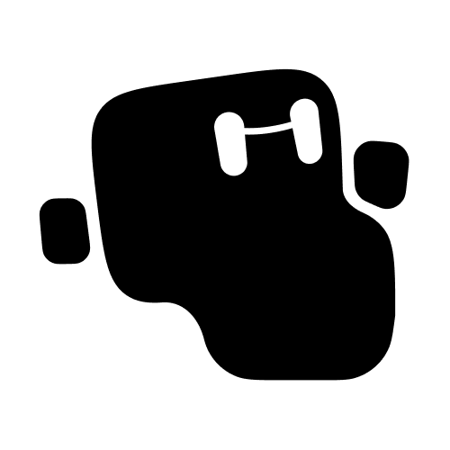
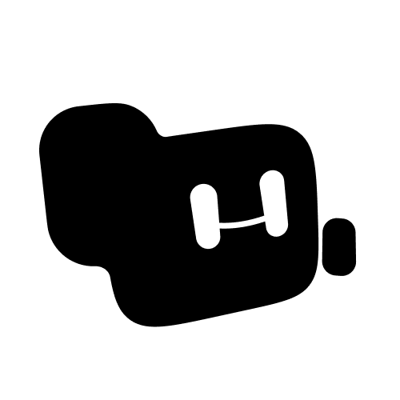
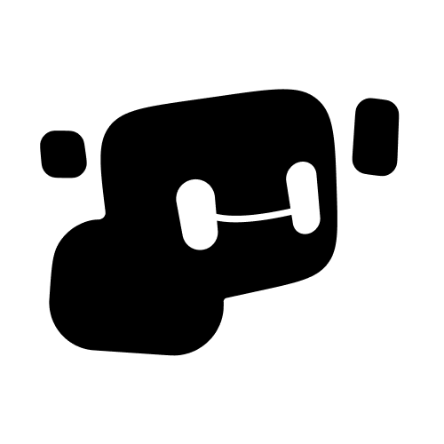
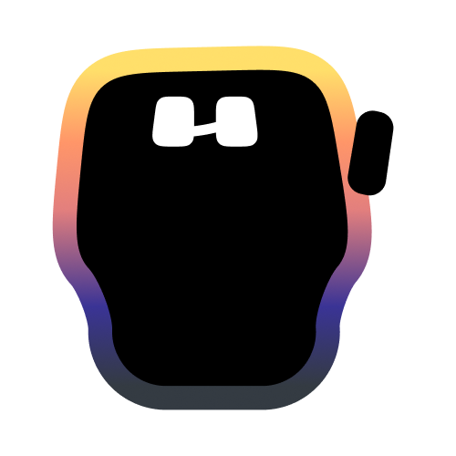
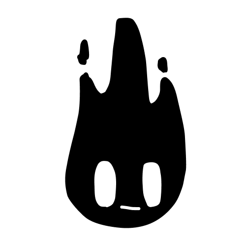
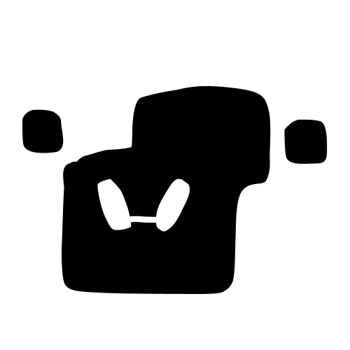
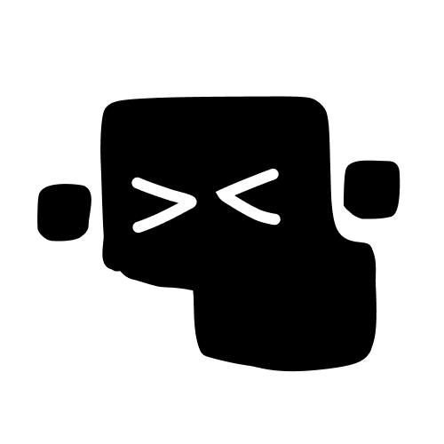
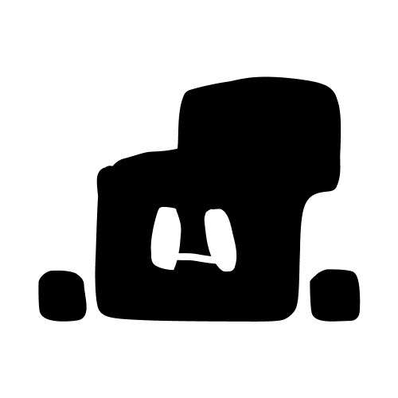
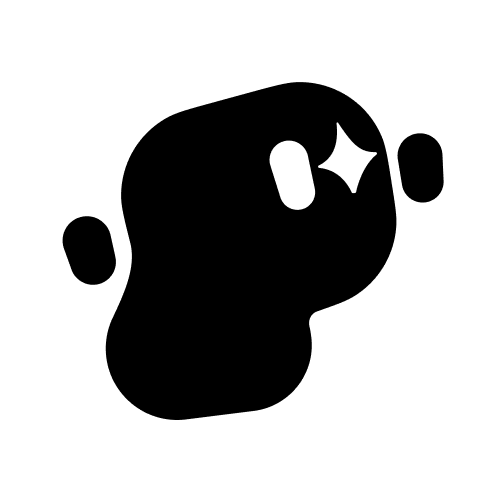
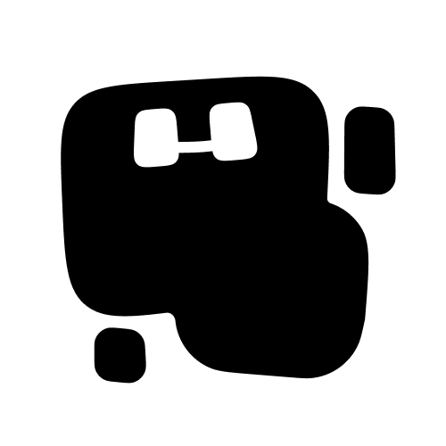
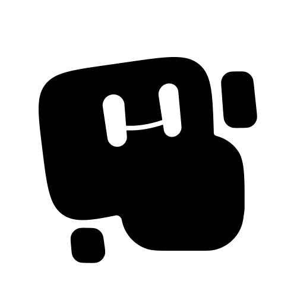
Branding and website
Skye and Maya brought me in to ship the story, brand, and site while the hardware moved fast. Under TM Design Studios, I led the marketing site (layout, motion, and front end) and built the identity with my teammate Mavis Zhang. The landing page can be found at womp.systems